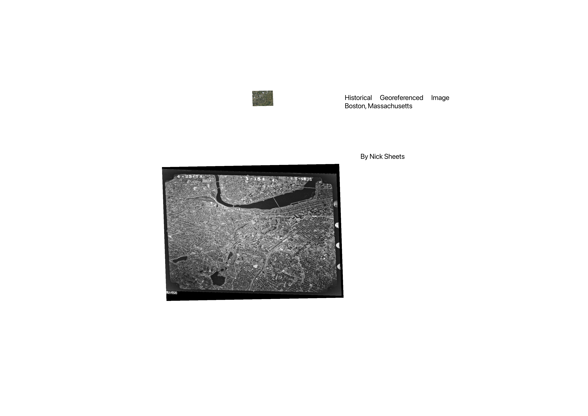

Homework 5: Historical Image Georeference
Nicholas Sheets
This is a historical image of Boston, Massachusetts with the main ground control points around Fenway Park.

Data used for this project
Link to GCP